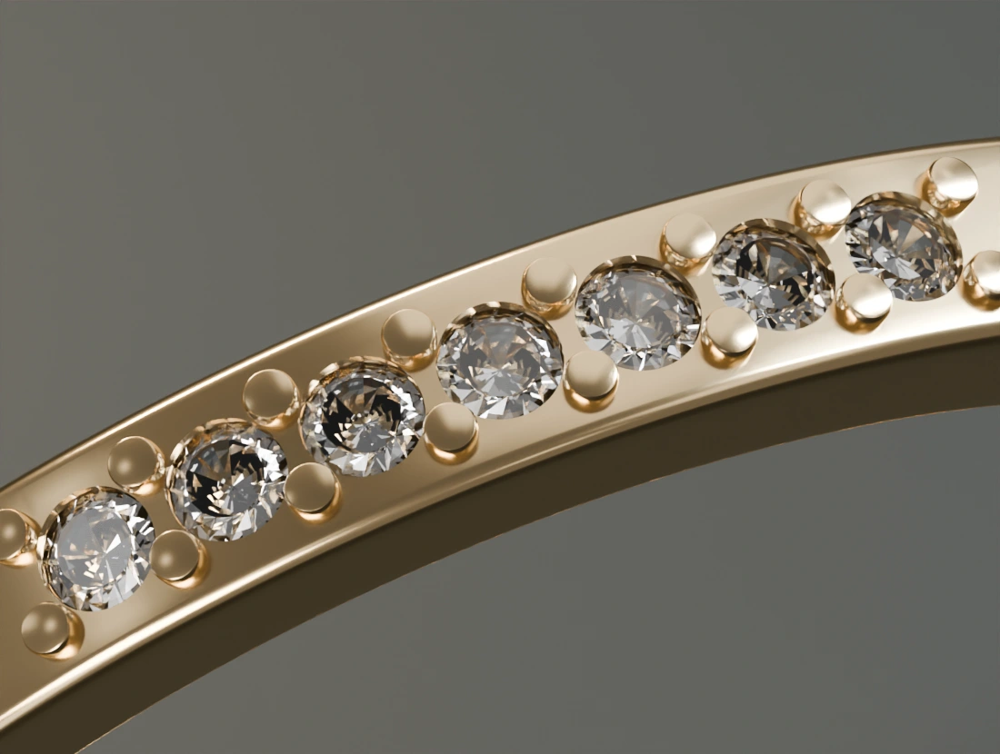

← Кольцо в 3DКольцо-дорожка
Карта заготовки R1 · размер 17 · модель до закрепки. Размеры указаны в миллиметрах.
Шинка и облегчение
Ширина 2,20 мм. Внутри шинки сделана плавная открытая выборка глубиной 0,28 мм. По сторонам выборки сохранены две контактные полосы исходного диаметра 17,00 мм. Радиальная толщина металла в 14 створах при Z = ±0,90 мм, напротив семи камней, составляет 1,579–1,580 мм.
Объём металла в Brep 180,896 мм³, в STL 180,902 мм³. Оценка массы без камней и литников при плотности 13,5 г/см³ (585) составляет 2,44 г, при 15,5 г/см³ (750) — 2,80 г. Для заказа массу уточняют по плотности выбранной лигатуры.
Посадка камней
Семь камней Ø 1,20 мм. Шаг центров по дуге 1,40 мм. Каждую вставку проверили на протяжении 3,00 мм вдоль собственного радиуса. Объём пересечения с шестью остальными камнями равен нулю по всем семи маршрутам. При углублении на 0,025 мм каждый камень встречает опору.
Под каждым гнездом проходит радиальный канал Ø 0,70 мм. В цифровой заготовке калибр Ø 0,66 мм проходит все семь каналов. У 16 корнеров измеренное сечение стержня 0,530–0,530 мм. Запас вершины над верхней плоскостью рундиста 0,345–0,345 мм. Окончательную подрезку и обжим выполняет закрепщик по фактическим вставкам.
На согласование до печати
У всех шести промежутков отдельно измерили металл вдоль касательной в средней плоскости Z = 0. На радиусе 9,50 мм между каналами остаётся 0,640 мм. На 0,43 мм выше, в зоне рундиста, верхняя кромка между гнёздами сужается до 0,198 мм. Перед печатью согласуйте её с закрепщиком по фактической огранке и режиму финишной обработки.
Контроль STL
Металл образует одну замкнутую оболочку из 67,656 треугольников. Открытых рёбер, неманифолдных рёбер, вырожденных граней и самопересечений — 0. Все семь файлов вставок также замкнуты и проверены на самопересечения.
Из 67656 лучей по одному из центра каждой грани получено 65948 встречных попаданий с косинусом ≥ 0,35. У 4448 расстояние меньше 0,60 мм. Минимум 0,199 мм расположен между соседними посадками, вблизи X -3,361, Y 9,424, Z 0,020. В такие замеры попадают узкие перемычки между гнёздами и корнеры. До печати мастерской следует согласовать эти участки и пробу сплава. Пробную отливку и натурную закрепку ещё предстоит выполнить.
Файлы и виды
Комплект Rhino 8, STL и GLB · Измерения JSON · Тепловая карта

Вернуться к модели